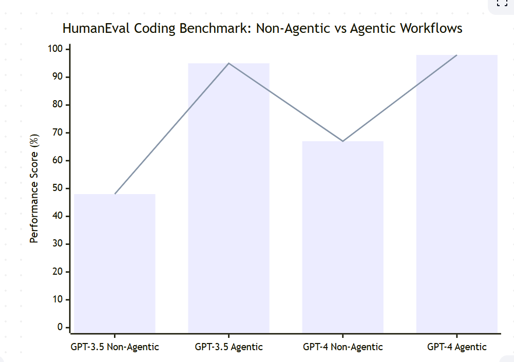

Module 1 — Episode 3
Training:Agentic AI Training
🎯 Learning Objectives
By the end of this episode, you will be able to:
- ✅ Explain the key benefits of agentic workflows compared to non-agentic approaches
- ✅ Evaluate how agentic workflows enhance model performance and efficiency
- ✅ Identify opportunities to use modularity and parallelism in AI system design
🧭 Overview
This episode explores the major advantages of agentic AI workflows—systems where large language models (LLMs) act as autonomous agents capable of reasoning, reflecting, and improving their own outputs.
You’ll learn how agentic workflows outperform traditional single-prompt approaches, why they enable faster and more scalable task execution, and how their modular architecture allows flexible system upgrades.
These principles are foundational to designing robust, real-world AI applications that go beyond static model inference.
🧱 Prerequisites
Readers should already understand:
- Basic operation of large language models (LLMs) such as GPT-3.5 and GPT-4
- The concept of prompting and non-agentic workflows (single-step generation)
- How AI systems interact with external tools or APIs (e.g., web search engines)
🔑 Core Concepts
- Agentic Workflow – A structured process where an AI model acts through multiple reasoning or action steps, often reflecting on or improving its own output.
- Parallelism – Running multiple subtasks concurrently to achieve faster overall task completion.
- Modularity – Designing AI workflows as interchangeable components (e.g., models, search tools, evaluators) that can be swapped or upgraded independently.
- Performance Amplification – The phenomenon where even older models perform significantly better when placed inside an agentic workflow compared to direct prompting.
🖼 Visual Explanation
 Caption:This diagram illustrates performance comparisons between GPT-3.5 and GPT-4 on the HumanEval coding benchmark, showing how agentic workflows dramatically improve model performance compared to non-agentic approaches.
⚙️ Technical Breakdown
How It Works
1. Model Invocation: The workflow prompts an LLM to generate an initial output (e.g., code, essay, or plan).
2. Reflection and Improvement: The agent analyzes its own output, identifies potential issues, and revises the result.
3. Parallel Subtasks: Multiple agents or threads execute subtasks simultaneously (e.g., searching multiple web pages or generating alternative drafts).
4. Aggregation and Synthesis: The system consolidates outputs from multiple steps or agents into a final, coherent result.
5. Dynamic Modularity: Developers can replace or upgrade individual components—such as switching search engines or LLM providers—without redesigning the entire workflow.
Why It Works
Agentic workflows exploit feedback loops and distributed task execution, enabling the system to self-correct and scale.
Unlike a single-shot prompt, an agentic system can reason iteratively and coordinate multiple specialized components.
This structure mirrors human problem-solving—planning, executing, verifying, and refining—allowing even smaller models to achieve higher accuracy and robustness.
When To Use It
✅ Ideal Scenarios- Complex, multi-step reasoning tasks (e.g., code generation, research synthesis)
- Workflows requiring information retrieval from multiple sources
- Systems that benefit from iterative refinement or validation
- The task is trivial or single-step (e.g., summarizing a short paragraph)
- Latency sensitivity outweighs the benefits of reflection or parallelization
- Infrastructure costs (multiple model calls) are prohibitive
Trade-offs & Limitations
- Increased Complexity: More moving parts mean more orchestration overhead.
- Latency: Reflection and multi-step reasoning take longer than direct generation.
- Cost: Each agentic step typically requires additional API calls or compute cycles.
- Debugging Difficulty: Multi-agent interactions can make tracing errors harder.
Performance Considerations
- Parallel Execution: Use concurrency to offset latency by running subtasks simultaneously.
- Component Optimization: Choose specialized models or search engines for specific subtasks.
- Caching and Reuse: Cache intermediate results (e.g., search queries) to reduce redundant calls.
- Scalability: Modular design enables horizontal scaling by distributing subtasks across multiple agents or servers.
💻 Code Examples
Minimal Example
# Example: Agentic workflow improving code generation accuracy
from my_agentic_framework import Agent, Reflector, Evaluator
# Step 1: Generate initial code
generator = Agent(model="gpt-3.5-turbo")
initial_code = generator.run("Write a Python function to reverse a string.")
# Step 2: Reflect and improve
reflector = Reflector(model="gpt-3.5-turbo")
improved_code = reflector.run(f"Review and improve this code:\n{initial_code}")
# Step 3: Evaluate performance
evaluator = Evaluator(metric="correctness")
score = evaluator.run(improved_code)
print("Final Code:\n", improved_code)
print("Evaluation Score:", score)
This example demonstrates a simple two-step agentic workflow where a model first generates code, then reflects to improve it.
Even without upgrading the model, this reflective loop can significantly enhance output quality—illustrating the core benefit of agentic AI.
🧩 Summary
Agentic workflows deliver three major benefits:
1. Performance Gains: They dramatically enhance model accuracy and reliability, often more than upgrading to a larger model.
2. Parallel Efficiency: They can perform subtasks simultaneously, completing complex work faster than humans or sequential systems.
3. Modular Flexibility: They allow developers to easily swap or upgrade components—LLMs, APIs, or tools—without reengineering the entire system.
Together, these properties make agentic AI a powerful paradigm for building scalable, adaptive, and high-performing intelligent systems.